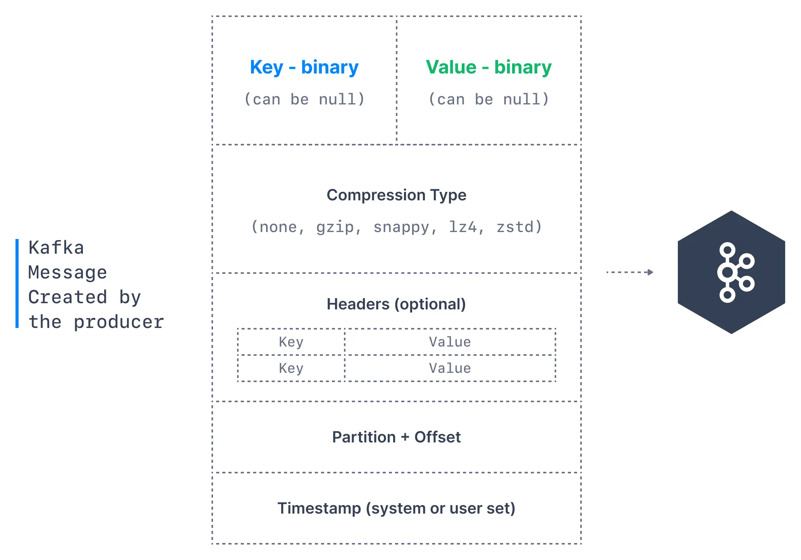
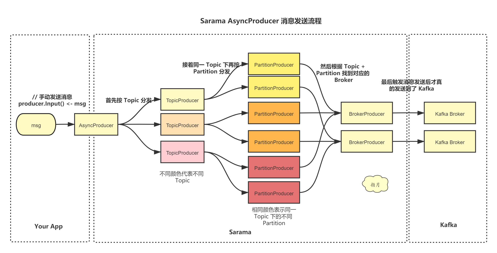
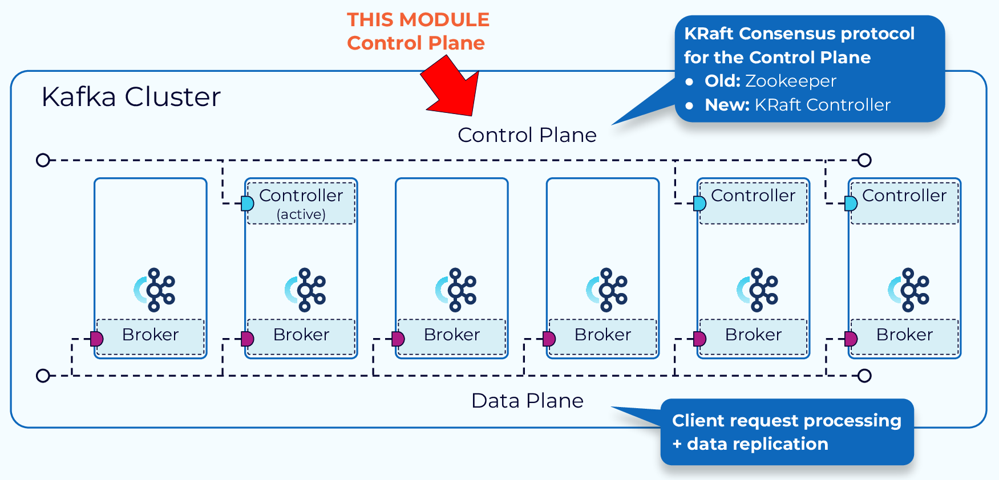
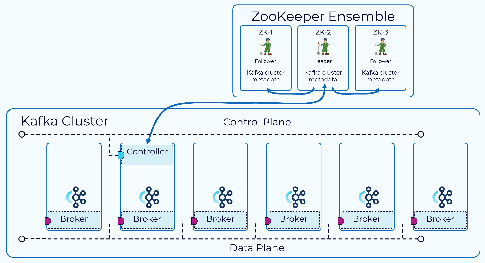
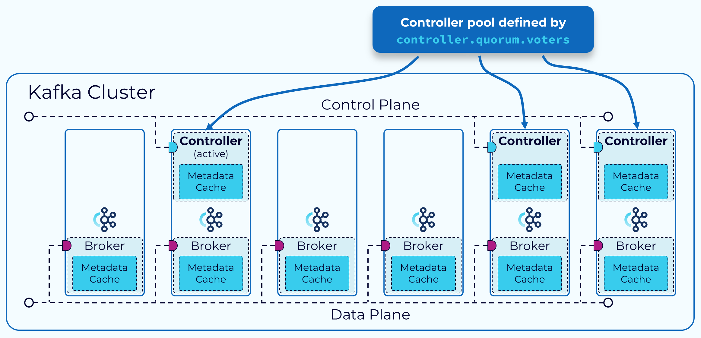

kafka-进阶篇
kafka-入门篇介绍了kafka的重要概念。
本文将从消息的视角出发，并结合实验，从消息生产、消息处理、消息消费全流程分析kafka的设计原理。
kafka版本：3.6.0
1. 消息生产
消息生产主要分为以下几个步骤
构造消息：创建消息对象序列化：将消息对象转换为字节数组分区器：根据消息的Key选择一个分区缓冲区：按分区缓冲一批消息发送请求：将数据发送到Kafka集群响应处理：返回成功或失败响应
以下是使用github.com/IBM/sarama实现的消息生产
- 首先指定 brokers 和 config，初始化Producer对象
- brokers: broker地址，通常数量>=3
- config: 设置 acks、retry、partitioner 等参数
- 根据 Topic、Key、Value 构造消息对象，此外还可以注入 Headers 等数据
- 调用
SendMessage发送消息，获取消息写入的 partition 和 offset
var (
topic = "add-user"
brokers = []string{"localhost:19092", "localhost:19093", "localhost:19094"}
config *sarama.Config
)
func init() {
config = sarama.NewConfig()
config.Producer.Return.Successes = true // 确保消息发送成功
config.Producer.Retry.Max = 3 // 重试次数
config.Version = sarama.V3_6_0_0 // 根据Kafka版本调整
}
func Produce(msg Message) error {
producer, err := sarama.NewSyncProducer(brokers, config)
if err != nil {
return errors.Wrap(err, "Failed to start producer")
}
defer producer.Close()
encodedMsg := &sarama.ProducerMessage{
Topic: topic,
Key: sarama.StringEncoder(msg.Key), // 消息键（可选）
Value: sarama.StringEncoder(msg.Value), // 消息值
}
// 发送消息
partition, offset, err := producer.SendMessage(encodedMsg)
if err != nil {
return errors.Wrap(err, "Failed to send message")
}
log.Printf("Sent message to partition %d, offset %d\n", partition, offset)
return nil
}
1.1 构造消息
消息包括但不限于以下字段，需要说明的是，它并不是单纯意义上的消息，它包含了多个属性，原本需要发送的与业务相关的消息体只是其中的一个Value属性。
| 字段 | 简介 |
|---|---|
| Topic | 消息要发往的主题，消息以主题为单位归类 |
| Key | 消息的键，可用于计算分区号（二次归类）、亦可用于日志压缩 |
| Value | 消息本体，一般不为空，否则表示墓碑消息 |
| Headers | 消息头部，kv对 用于应用级别的扩展，可以存业务数据 |
| Partition | 消息要发往的分区号 |
| Timestamp | 消息的时间戳，两种类型：CreateTime（创建时间）、LogAppendTime（追加到日志文件的时间） |
*墓碑消息：在日志压缩（Log Compaction）机制中，用于告知消费者：某个 Key 的最新状态是“已删除”，应清理本地缓存的该 Key 数据。
1.2 序列化
将消息 Key 和 Value 转换为字节数组
go sarama提供了 StringEncoder 将 string 转为 []byte- 对于其他类型的数据，可以用json、sonic 等工具先转为 string 或 []byte
1.3 分区器
决定生产者将消息发送到哪个Partition，常用的有以下几种分区策略：
轮询分区（Round-robin）：顺序分配到每个分区- 优点：最大程度保证负载均衡
随机分区（Randomness）：根据随机数确定分区- 优点：实现简单
哈希分区（Hash）：消息键保序,对 Key 哈希取模确定分区 hash(Key) % numPartitions- 优点：相同 Key 的消息可分到同一个分区，保证顺序
粘性分区（Sticky）：会在一段时间内将消息发送到同一个分区，当批次满了或者达到一定时间后，选择另一个分区继续发送消息。Kafka 2.4.0 引入- 优点：便于批量处理，提高吞吐量
自定义分区：发送消息时指定分区序号
go sarama默认采用哈希分区，若 Key 为 nil 则随机确认分区，否则哈希取模确认分区
也可以配置或自己实现一套分区策略，只需实现Partitioner接口
config.Producer.Partitioner = sarama.NewRoundRobinPartitioner // 轮询分区器
type Partitioner interface {
Partition(message *ProducerMessage, numPartitions int32) (int32, error)
RequiresConsistency() bool
}
1.4 缓冲区
Kafka批量发送可以提升数据发送效率，但也会增加延迟，需要在二者之间 tradeoff
go sarama可以通过以下几种方式设置缓冲区 & 触发消息提交
config := sarama.NewConfig()
config.ChannelBufferSize = 256 // 默认消息数量
config.Producer.Flush.Bytes = 1024 * 1024 // 大小 1MB
config.Producer.Flush.Messages = 3 // 数量
config.Producer.Flush.Frequency = time.Duration // 发送频率
1.5 发送请求
以 sarama 为例，有两种类型的生产者
SyncProducer 同步生产者：阻塞请求，直到收到了 ack，通过config.Producer.RequiredAcks参数控制- asks=0：fire and forget 只管发送，不管到达；性能很高，可靠性最差
- asks=1（默认值）：只要 leader 副本成功写入消息即为成功；在性能和可靠性间取舍，leader 宕机时可能丢消息
- asks=-1 or all：需要所有副本成功写入消息才认为成功；性能最低，可靠性最强，但也可能会丢消息，比如只有一个副本
AsyncProducer 异步生产者：使用 channel 发送消息，以及接收生产成功/失败的结果，channel 的大小通过config.ChannelBufferSize控制
数据压缩
Producer 端压缩、Broker 端保持、Consumer 端解压
通过
Config.Producer.CompressionLevel指定压缩等级- 压缩等级是算法内部的可调参数，数值越高通常代表压缩率越高（数据体积更小），但压缩速度越慢且CPU 占用越高
通过
Config.Producer.Compression指定压缩算法，例如：GZIP/Snappy/LZ4/ZSTD- 吞吐量方面：LZ4 > Snappy > zstd ≈ GZIP
- 压缩比方面，zstd > LZ4 > GZIP > Snappy
- 解压速度：LZ4 ≈ Snappy > Zstd > Gzip
重试机制
- 可通过
config.Producer.Retry.Max = 3设置消息发送的重试次数
1.6 响应处理
SyncProducer 同步生产者：阻塞等待响应，直接返回结果给调用方AsyncProducer 异步生产者：通过Successes和Errorschannel 异步通知结果
2. 消息处理
消息处理的流程如下，
对于消息生产请求
- 请求进入 broker 的套接字接收缓冲区
- 处理用户请求
- 网络线程从缓冲区捞一个用户请求，并负责该请求从接收到响应的全生命周期，直到处理完成才被放回线程池
- 将用户请求转换为消息生产请求对象，并添加到请求队列
- 处理消息生产请求
- I/O 线程从队列捞取一个请求，做一些校验，和分区关联，最后把消息追加到 commit log
- 消息先存在 Page Cache 中，然后被批量刷盘，最终落到磁盘上
- 为了完成 Leader-Follower 副本同步，消息还会存到 Purgatory（名为炼狱的缓冲区）上
- 响应请求
- 当满足 acks 条件，如成功写入 Leader，将把结果写入响应队列
- 网络线程将结果捞出写入套接字发送缓冲区
对于消息消费请求，流程基本相同，不同点如下
I/O 线程会计算消息在日志文件中的位置
可以指定每批拿到多少数据才返回，把请求丢到 Purgatory 等待
Purgatory 中请求累计了足够多的数据后就可以响应
2.1 数据面：副本同步
副本同步也叫数据复制，是 Kafka 持久性和高可用的关键技术，如果副本因子是N，那么可以忍受 N-1 次 broker 宕机。
副本分为两类：
Leader：负责消息的收发，以及确认哪些 Follower 与自己同步Follower：主动从 Leader 拉取消息，返回同步的 Offset；根据是否与 Leader 同步，Follower 又被划分为；- ISR(In-Sync Replica)：保持同步，Leader 的预备军，为其 backup，在它宕机时取代之
- OSR(Out-Sync Replica)：存在不可接收的Gap，在阈值时间内没有拉取动作或没有拉取最新消息，通过
replica.lag.time.max.ms配置
Leader 会维护两个同步状态：
- LEO(Log End Offset)：实际复制的位置，标识当前日志文件中下一条待写入的消息的offset
- HW(High Watermark)：高水位，所有 Follower 都同步了之前的消息，可认为之前的消息已经持久化，消费者只能拉取到这个offset之前的消息；
- Leader HW = min(leader LEO, followers LEO)
- Follower HW = min(leader HW, follower LEO)
2.2 控制面：管理集群元数据
Zookeeper Mode：通过 ZooKeeper 的外部共识服务进行管理，其中一个 Broker 被指定为控制器。该控制器负责与 Zookeeper 以及集群中的其他 Broker 进行通信。集群的元数据持久保存在 ZooKeeper 中。KRaft Mode：(3.3.1 引入)：一部分 Broker 被指定为控制器，这些控制器提供之前由 Zookeeper 提供的共识服务。所有集群元数据现在都存储在 Kafka 主题中并由内部管理。- 优点
- 更简单的部署和管理：只需安装和管理一个应用程序，Kafka 的运维占用空间显著减少
- 提升可扩展性：KRaft 的恢复时间比 ZooKeeper 快一个数量级。这使我们能够高效地扩展到单个集群中的数百万个分区
- 更高效的元数据传播：基于日志、事件驱动的元数据传播可提高 Kafka 许多核心功能的性能
- 优点
2.2.1 Zookeeper
2.2.2 KRaft
节点角色：节点可以专门作为 Controller 或 Broker，也可以同时承担两种角色
- 控制器：每个 Controller 都会互相感知，并选出一个作为 leader（活跃控制器）；所有节点都会同步维护一份元数据缓存，出现故障时能快速选出新 leader
- 集群元数据：存储在名为
__cluster_metadata的单分区 Topic 中，在 Controller 和 Broker 之间同步状态
选举 Controller Leader
- 基于 Raft 协议：TODO 学习Raft
2.4 物理存储
2.4.1 分区分配
决定每个 Partition 分配到哪个 Broker。
首先明确总副本数为：分区数✖️副本因子，目标是把它们均匀地分配到所有 Broker，过程如下：
- 先分配 Leader 副本，随机选取一个 Broker x 分配Leader0, 之后轮询 Broker(x+1)%n 分配Leader1…
- 之后根据 Leader 副本的位置分配 Follower, 尽量与 Leader 不在同一个 Broker 上
- Follower 0a, Follower 0b 分别分配到 Broker(x+1)%n, Broker(x+2)%n
2.4.2 日志文件
消息以追加的形式写入磁盘文件，为了防止文件体积过大以及加速查询，将其进行分段并构建索引。
详细内容见 kafka-入门篇-存储结构
2.4.3 日志清理
为了节省磁盘空间，需要对历史数据进行清理
每个日志片段可分为干净区（被清理过）和 污浊区（未被清理），清理线程针对污浊区
日志删除：
- 基于时间：删除早于保留时间的 Segment，
log.retention.hours（默认 168 小时，即 7 天） - 基于大小：当分区总大小超过阈值时，删除最旧的 Segment，
log.retention.bytes（默认 -1，即不限制）。
- 基于时间：删除早于保留时间的 Segment，
日志压缩（Compact 策略，适用于 Key-Value 场景）
- 保留每个 Key 的最新值，删除旧版本数据。
- 常用于 Topic 存储状态信息（如 __consumer_offsets）
2.6 高性能设计（TODO 新开一文）
2.6.1 Reactor 多路复用
2.6.2 PageCache
2.6.3 顺序磁盘写入
2.6.4 零拷贝
2.6.5 时间轮
3. 消息消费
消息消费主要分为以下几个步骤
初始化：初始化消费者组和消费者，设置相关配置订阅主题：订阅一个或多个主题轮询拉取消息：采用 pull 模式从 Broker 拉取消息提交 Offset：将数据发送到Kafka集群，按业务逻辑处理消息
// 实现 ConsumerGroupHandler 接口
type ConsumerHandler struct{}
func (h ConsumerHandler) Setup(session sarama.ConsumerGroupSession) error {
fmt.Println("Consumer group setup")
return nil
}
func (h ConsumerHandler) Cleanup(session sarama.ConsumerGroupSession) error {
fmt.Println("Consumer group cleanup")
return nil
}
func (h ConsumerHandler) ConsumeClaim(session sarama.ConsumerGroupSession, claim sarama.ConsumerGroupClaim) error {
// 循环消费消息
for msg := range claim.Messages() {
fmt.Printf("Received message: Topic=%s Partition=%d Offset=%d Key=%s Value=%s\n",
msg.Topic, msg.Partition, msg.Offset, string(msg.Key), string(msg.Value))
session.MarkMessage(msg, "") // 标记消息已处理
}
return nil
}
func Consume() {
// 创建消费者组
consumerGroup, err := sarama.NewConsumerGroup(brokers, groupID, config)
if err != nil {
panic("Failed to create consumer group: " + err.Error())
}
defer consumerGroup.Close()
// 启动消费者循环
var (
wg sync.WaitGroup
handler = ConsumerHandler{}
)
wg.Add(1)
go func() {
defer wg.Done()
for {
// Consume 方法会阻塞，直到发生错误或上下文取消
if err := consumerGroup.Consume(context.Background(), []string{topic}, handler); err != nil {
fmt.Printf("Consumer error: %v\n", err)
return
}
}
}()
wg.Wait()
}
3.1 初始化消费者(组)
消费者是消费消息的基本单位，为了提升消费并发能力，支持横向伸缩，引入了消费组的概念。
- 消费组和消费者是 1:n 的关系：消费组即多个消费者集合，每个消费者只能从属于一个消费组
- 消费组和 Topic 是 n:n 的关系：消费组可订阅多个 Topic，每个 Topic 可被多个消费组订阅，互不影响
- Topic 中的每个 Partition 只能由组内的一个消费者负责，当消费者数>=Partition数，必定会有消费者闲置
3.1.1 初始化
- 消费者加入组：消费者启动后向协调器（Coordinator）发送
JoinGroup请求。协调器根据group.id哈希选择所属的__consumer_offsets分区，该分区的Leader Broker担任协调器 - 选举群主（Group Leader）：第一个发送
JoinGroup请求的消费者被选为群主，负责执行分区分配策略。群主获取所有活跃消费者的订阅信息（含订阅的主题列表）
3.1.2 分区分配 & Rebalance
分区分配：确定分区归属哪个消费者
- 处理流程
- 群主将分配结果提通过
SyncGroup请求交给协调器 - 协调器将分配结果通过
SyncGroupResponse发送发送给所有消费者 - 消费者根据分配的分区拉取消息，记录
Offset至__consumer_offsets
- 群主将分配结果提通过
Rebalance：分区所有权重新分配的过程，当分区数或消费者数发生变化，可能会触发。需要尽量避免
暂停消费：会造成群组一段时间的不可用
重复消费或数据丢失
- 若消费者在重分配前未正确提交偏移量（Offset），新分配的消费者可能从旧偏移量重新消费，导致重复处理
- 若偏移量提交早于实际处理完成，则可能丢失消息
处理流程
- 触发条件：消费者加入/退出（心跳超时或主动下线）、订阅主题的分区数变化、新增匹配主题（如使用通配符订阅）
- 协调器通知所有消费者暂停消费（Stop-the-world），进入
Revoke阶段（撤销当前分配） - 重新执行分区分配策略，生成新方案并同步
- 消费者从新分配的分区恢复消费，可能需重建本地状态
分配策略
Range:以单个主题为分配单位，按分区序号和消费者名称字典序排序。每个消费者分配的分区数为分区数/消费者数，余数分配给前几个消费者- 优点：简单
- 缺点：重分配代价高，当消费者订阅多个主题时，前几个消费者可能承担更多分区，导致数据倾斜
轮询分配（RoundRobin）：全局轮询所有主题的分区和消费者，按哈希排序后均匀分配。- 优点：跨主题分配更均衡，适合消费者订阅相同主题的场景
- 缺点：重分配代价高
粘性策略（Sticky）：重分配时尽可能保留原有分配结果以减少变动，在此基础上尽量保持分区分配均衡- 优点：重分配代价低
合作式粘性策略（CooperativeSticky）：将全局重平衡拆分为多次小规模调整，减少消费者停顿时间- Kafka 2.4+ 默认使用
Range + CooperativeSticky组合策略，逐步淘汰旧策略
- Kafka 2.4+ 默认使用
3.2 订阅主题
支持指定名称或正则匹配
- 指定名称：传入 Topic 名称列表
- 特点：消费者组内协调分区分配，支持负载均衡
- 正则匹配：匹配动态 Topic 名称
- 特点：自动订阅新创建的匹配主题，无需手动维护列表；对于新增主题，会触发一次 Rebalance
3.3 轮询拉取数据
开启一个无限循环，使用poll()方法拉取消息
poll()方法返回一个记录列表：包含消息归属的 Topic、Partition、Offset 以及键值对- 实际上，查找组协调器、加入群组、接受分区分配、Rebalance、发送心跳等全过程都是在这个循环中完成的
3.4 提交 Offset
poll()方法总是返回还没有被当前消费者读取过的记录，需要消费者主动提交 Offset，维护消费进度。
消费者往__consumer_offsets发送消息，其中包含每个分区的 Offset
3.4.1 __consumer_offsets
__consumer_offsets 是一个特殊的内部主题，用于持久化存储消费者组的消费位移（Offset）和其他元数据，直接影响消息消费的可靠性、故障恢复能力和负载均衡行为
核心作用
- 位移持久化：记录消费者组在每个分区的消费进度，确保消费者重启或故障后能继续从正确位置消费
- 消费者组协调：存储消费者组的元数据（如成员列表、分区分配方案），支持消费者组的动态扩缩容（Rebalance）
- 幂等性保障：与 Kafka 事务机制结合，支持 Exactly-Once 语义（通过事务性位移提交）
存储结构
默认分区数：50（由
offsets.topic.num.partitions控制）默认保留时间：7 天（由
offsets.retention.ms控制）日志压缩策略：启用 Compact 策略，仅保留每个键（Key）的最新值
消息格式：
- Key
Key = [GroupID, Topic, Partition]- Value
Value = { offset: int64, // 提交的位移值 metadata: string, // 用户自定义元数据（如应用上下文） commit_timestamp: int64,// 提交时间戳（用于保留策略） expire_timestamp: int64 // 位移过期时间（由 `offsets.retention.ms` 控制） }
3.4.2 提交策略
| 策略 | 介绍 | 可靠性 | 吞吐量 | 复杂度 | 适用场景 |
|---|---|---|---|---|---|
| 自动提交 | 消费者定期提交最大的 Offset，sarama Consumer.Offsets.AutoCommit默认 1 秒/次 |
低 | 高 | 低 | 日志采集、监控数据 |
| 手动同步提交 | 代码显示调用commitSync(),会阻塞请求，等待提交结果 |
高 | 中 | 中 | 金融交易、计费系统 |
| 手动异步提交 | 代码显示调用commitAsync() |
中 | 高 | 高 | 高吞吐且允许短暂不一致 |
| 事务提交 | 结合 Kafka 事务 API，将消息消费与 Offset 提交绑定为原子操作，实现 Exactly-Once 语义。 | 最高 | 低 | 最高 | 跨系统原子操作（Exactly-Once） |
Reference
[1] Kafka权威指南
[2] 深入理解Kafka：核心设计与实践原理
[3] kafka-producers
[5] Kafka Producer API Internals
[6] Kafka 消息格式的演变
[9] sarama 客户端 producer 源码分析(优质博主！)
[10] 生产者压缩算法详解及源码分析
[11] ⭐Inside the Apache Kafka Broker ⭐ 墙裂推荐！
[12] sarama的消费者组分析、使用
[13] Kafka消费者组三种分区分配策略
[14] Kafka消费者分区分配策略详解